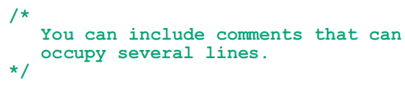
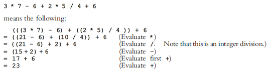

1. Basic Elements of C++
The Basics of a C++ Program
Comments
The program that you write should be clear not only to you, but also to the reader of your program. Part of good programming is the inclusion of comments in the program. Typically, comments can be used to identify the authors of the program, give the date when the program is written or modified, give a brief explanation of the program, and explain the meaning of key statements in a program. In the programming examples, for the programs that we write, we will not include the date when the program is written, consistent with the standard convention for writing such books.
Single-line comments begin with // and can be placed anywhere in the line. Everything encountered in that line after // is ignored by the compiler. For example, consider the following statement:
You can put comments at the end of this line as follows:
This comment could be meaningful for a beginning programmer.
Multiple-line comments are enclosed between /* and */. The compiler ignores anything that appears between /* and */. For example, the following is an example of a multiple-line comment:
Special Symbols
The smallest individual unit of a program written in any language is called a token. C++’s tokens are divided into special symbols, word symbols, and identifiers. Following are some of the special symbols:
Reserved Words (Keywords)
A second category of tokens is reserved word symbols. Some of the reserved word symbols include the following:
Reserved words are also called keywords. The letters that make up a reserved word are always lowercase. Like the special symbols, each is considered to be a single symbol. Furthermore, reserved words cannot be redefined within any program; that is, they cannot be used for anything other than their intended use.
Identifiers
A third category of tokens is identifiers. Identifiers are names of things that appear in programs, such as variables, constants, and functions. All identifiers must obey C++’s rules for identifiers.
Identifier: A C++ identifier consists of letters, digits, and the underscore character (_ ) and must begin with a letter or underscore.
Identifiers can be made of only letters, digits, and the underscore character; no other symbols are permitted to form an identifier.
Whitespaces
Every C++ program contains whitespaces. Whitespaces include blanks, tabs, and newline characters. In a C++ program, whitespaces are used to separate special symbols, reserved words, and identifiers. Whitespaces are nonprintable in the sense that when they are printed on a white sheet of paper, the space between special symbols, reserved words, and identifiers is white. Proper utilization of whitespaces in a program is important. They can be used to make the program more readable.
Data Types
Simple Data Types
The simple data type is the fundamental data type in C++ because it becomes a building block for the structured data type, which you will start learning about in Chapter 8. There are three categories of simple data: integral, floating-point and enumuration ( will be covered in later chapters ).
Integral:
Floating-point:
Data Types, Variables, and Assignment Statements
Now that we know how to define an identifier, what a data type is, and the term variable, we can show how to declare a variable. When we declare a variable, not only do we specify the name of the variable, we also specify what type of data a variable can store. A syntax rule to declare a variable is:
dataType identifier;
For example, consider the following statements:

In the first statement, we are telling the system to allocate four bytes of memory space to store an int value and name that memory space counter. That is, counter is a variable that can store an int value. Similarly, interestRate is a variable that can store a value of type double; and grade is a variable that can store a value of type char.
One way to store a value in a variable is by using an assignment statement, which takes the following form:
variable = expression;
where expression is evaluated and its value is assigned to variable. In C++, = is called the assignment operator.
For example, consider the following statements:
The first statement stores 5 in the variable counter, the second statement stores 0.05 in interestRate, and the third statement stores the character 'A' in grade. We will discuss assignment statements in detail later in this chapter.
Arithmetic Operators, Operator Precedence, and Expressions
One of the most important uses of a computer is its ability to calculate. You can use the standard arithmetic operators to manipulate integral and floating-point data types. There are five arithmetic operators:
Arithmetic Operators: + (addition), - (subtraction or negation), * (multiplication), / (division), % (mod, (modulus or remainder))
You can use the operators +, -, *, and / with both integral and floatingpoint data types. These operators work with integral and floating-point data the same way as you learned in a college algebra course.
When you use / with the integral data type, it gives the quotient in ordinary division. That is, integral division truncates any fractional part; there is no rounding.
You use % with only the integral data type, to find the remainder in ordinary division.
Order of Precedence
When more than one arithmetic operator is used in an expression, C++ uses the operator precedence rules to evaluate the expression. According to the order of precedence rules for arithmetic operators,
*, /, %
are at a higher level of precedence than
+, -
Note that the operators *, /, and % have the same level of precedence. Similarly, the operators + and - have the same level of precedence.
When operators have the same level of precedence, the operations are performed from left to right. To avoid confusion, you can use parentheses to group arithmetic expressions. For example, using the order of precedence rules,
2. Input/Output
C++ uses a convenient abstraction called streams to perform input and output operations in sequential media such as the screen, the keyboard or a file. A stream is an entity where a program can either insert or extract characters to/from. There is no need to know details about the media associated to the stream or any of its internal specifications. All we need to know is that streams are a source/destination of characters, and that these characters are provided/accepted sequentially (i.e., one after another).
The standard library defines a handful of stream objects that can be used to access what are considered the standard sources and destinations of characters by the environment where the program runs:
Standard output (cout)
On most program environments, the standard output by default is the screen, and the C++ stream object defined to access it is cout.
For formatted output operations, cout is used together with the insertion operator, which is written as << (i.e., two "less than" signs).
The << operator inserts the data that follows it into the stream that precedes it. In the examples above, it inserted the literal string Output sentence, the number 120, and the value of variable x into the standard output stream cout. Notice that the sentence in the first statement is enclosed in double quotes (") because it is a string literal, while in the last one, x is not. The double quoting is what makes the difference; when the text is enclosed between them, the text is printed literally; when they are not, the text is interpreted as the identifier of a variable, and its value is printed instead. For example, these two sentences have very different results:
To insert a line break, a new-line character shall be inserted at the exact position the line should be broken. In C++, a new-line character can be specified as \n (i.e., a backslash character followed by a lowercase n). For example:
This produces the following output:
Alternatively, the endl manipulator can also be used to break lines. For example:
This would print:
Standard input (cin)
In most program environments, the standard input by default is the keyboard, and the C++ stream object defined to access it is cin.
For formatted input operations, cin is used together with the extraction operator, which is written as >> (i.e., two "greater than" signs). This operator is then followed by the variable where the extracted data is stored. For example:
The first statement declares a variable of type int called age, and the second extracts from cin a value to be stored in it. This operation makes the program wait for input from cin; generally, this means that the program will wait for the user to enter some sequence with the keyboard. In this case, note that the characters introduced using the keyboard are only transmitted to the program when the ENTER (or RETURN) key is pressed. Once the statement with the extraction operation on cin is reached, the program will wait for as long as needed until some input is introduced.
The extraction operation on cin uses the type of the variable after the >> operator to determine how it interprets the characters read from the input; if it is an integer, the format expected is a series of digits, if a string a sequence of characters, etc.
As you can see, extracting from cin seems to make the task of getting input from the standard input pretty simple and straightforward. But this method also has a big drawback. What happens in the example above if the user enters something else that cannot be interpreted as an integer? Well, in this case, the extraction operation fails. And this, by default, lets the program continue without setting a value for variable i, producing undetermined results if the value of i is used later.
This is very poor program behavior. Most programs are expected to behave in an expected manner no matter what the user types, handling invalid values appropriately. Only very simple programs should rely on values extracted directly from cin without further checking. A little later we will see how stringstreams can be used to have better control over user input.
Extractions on cin can also be chained to request more than one datum in a single statement:
This is equivalent to:
In both cases, the user is expected to introduce two values, one for variable a, and another for variable b. Any kind of space is used to separate two consecutive input operations; this may either be a space, a tab, or a new-line character.
cin and strings
The extraction operator can be used on cin to get strings of characters in the same way as with fundamental data types:
However, cin extraction always considers spaces (whitespaces, tabs, new-line...) as terminating the value being extracted, and thus extracting a string means to always extract a single word, not a phrase or an entire sentence.
To get an entire line from cin, there exists a function, called getline, that takes the stream (cin) as first argument, and the string variable as second. For example:
Notice how in both calls to getline, we used the same string identifier (mystr). What the program does in the second call is simply replace the previous content with the new one that is introduced.
The standard behavior that most users expect from a console program is that each time the program queries the user for input, the user introduces the field, and then presses ENTER (or RETURN). That is to say, input is generally expected to happen in terms of lines on console programs, and this can be achieved by using getline to obtain input from the user. Therefore, unless you have a strong reason not to, you should always use getline to get input in your console programs instead of extracting from cin.
3. Control Structure
Types of Control Structure
There are 3 types of control structure in C++ which are:
1. Sequential
Sequential control structure is executed in sequential code statements (one line after the next line).
2. Selection
Selection control structure is executed in selectively way. Such control structure is oftenly used for decision or branching. Selection control structure can be resulting more than 1 alternative paths and outputs.
3. Repetition
Repetition control structure is used for looping, repeating the codes for multiple times until the pre-condition(s) is/are not meet anymore.
These all control structures can be executed by using certain reserved words in C++ except sequential control structure which does not require any preserve word to be executed.
Reserved Words for Control Structure
1. if, else if, else
'if', 'else if' and 'else' are reserved words for selection control structure. These 3 reserved words are used with a pre-condition as expression in the parentheses '(' and ')'. 'else if' and 'else' are reserved words only can be used if there is 'if' code statement before them. Besides that, their relations are associated to the most recent 'if' code statement that doesn't paired with any 'else' code statement. Image shown below is its synthax.
If the value of the expression is true, the statement will be executed and the other statements below will be bypassed. Otherwise, the current statement will be bypassed and the next following expression will be evaluated and the statement will be determined to be executed or not.
2. switch...case
'switch' and 'case' are reserved words used in selection control structure as well. These reserved words are normally used for the intention of allowing user to be able to choose their selection. 'break' and 'default' are also the other reserved words used in 'switch' selection control structure. Following image shows its synthax.
When a case value is matched, all statements starting from that particular case will be executed until a 'break' word is encountered. A 'break' word may or may not appear after each case and it causes an immediate exit from the whole switch, bypassed any following statements. 'default' is a reserved word act similary to 'case' but it's called for the situation when none of the case value is matched within the switch.
3. do...while
'do' and 'while' are reserved words to be used in repetition control structure, often named as 'do...while' loop. This 'do' repetition control structure is speacial from the other repetition control structure due to its way of execution. Any statements after the 'do' word and before the 'while' code statement will be executed sequentially at least once and its expression will be only evaluated after the first execution. Following image shows its synthax.
4. for
'for' is reserved words to be used in repetition control structure as well, often named as 'for' loop. Image shown below is its synthax.
initialization is the initial value of certain data type which to be used as a flag. test expression is the pre-condition for the 'for' loop to be executed and repeated. update is the execution of statement repeatedly after whole 'for' loop has been executed every once. The whole statement within 'for' loop will be executed and repeated until the pre-condition is not meet anymore.
5. while
'while' is a reserved word for repetition control structure, often named as 'while' loop. 'while' loop is differently from 'do...while' loop. The expression of 'while' loop will evaluated first before any execution of statement within the 'while' loop. 'while' loop will be executed repeatedly until the expression isn't true anymore. Following image shows its synthax.
Operators
There are several operator in C++ which are used in expression or statement in order to value the expression and directly linked to the execution of control structure. Some of the useful operators in expression are listed as below.
1. ==, !=, <, <=, >, >=
'==', '!=', '<', '<=', '>', '>=' are comparison operators which are used to compare identifier.
2. +, -, *, /, %
'+', '-', '*', '/', '%' are arithmetic operators which are used to execute arithmetic operation.
3. ++, --
'++', '--' are operators that are used for increment and decrement of value of identifier respectively.
4. !, &&, ||
'!', '&&', '||' are logical operators that are used for Boolean operation NOT, AND and OR respectively.